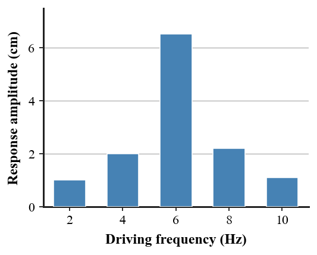

1. A reflected sound heard after the original is called what?
2. When sound bends because its speed changes across air layers, what phenomenon is occurring?
3. What causes an object to undergo forced vibration?
4. Does every object have only one possible motion, or can a system have one or more natural frequencies?
5. During resonance, is the response generally small or large compared with off-resonance driving?
6. The resonance-response graph shows vibration amplitude at several driving frequencies. Identify the strongest-response frequency and explain why that value is evidence for a natural frequency.

7. A sonar-like sound pulse returns after 0.80 s. If the wave speed is 340 m/s, calculate the reflector distance using the round trip.
8. During a cool night, sound speed differs in layers of air and the path curves. Explain how this is an example of refraction rather than reflection.
9. A music-box mechanism sounds louder when pressed against a tabletop. Explain how forced vibration of the table can increase the radiating surface.
10. Two identical tuning forks are close together. One is struck and the other begins vibrating. Explain why matching natural frequencies matters.
11. A student argues that resonance means an object creates energy from nothing. Critique the claim by identifying the driving source and the effect of repeated in-step energy transfers.
12. A sound ray bends downward through layered air. Evaluate the statement “the wave must have reflected from an invisible wall” and replace it with a speed-change explanation.
13. A reflected sound arriving after the original is an
14. Refraction differs from reflection because refraction involves
15. A tabletop vibrating because a music box presses on it is an example of
16. Which term describes a system’s preferred vibration frequency?
17. Resonance transfers energy efficiently when driving is
18. An echo returns in 0.50 s. At 340 m/s, the reflector distance is
19. A sound path curves through layers of air. Which idea is most relevant?
20. A driven oscillator has its largest response at 6 Hz. The best inference is